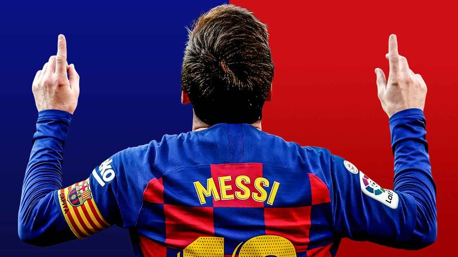

Lionel Andrés Messi[note 1] (Spanish pronunciation: [ljoˈnel anˈdɾes ˈmesi] (listen); born 24 June 1987), also known as Leo Messi, is an Argentine professional footballer who plays as a forward for and captains both Major League Soccer club Inter Miami and the Argentina national team. Widely regarded as one of the greatest players of all time, Messi has won a record seven Ballon d'Or awards[note 2] and a record six European Golden Shoes, and in 2020 he was named to the Ballon d'Or Dream Team. Until leaving the club in 2021, he had spent his entire professional career with Barcelona, where he won a club-record 35 trophies, including ten La Liga titles, seven Copa del Rey titles and the UEFA Champions League four times.[note 3] With his country, he won the 2021 Copa América and the 2022 FIFA World Cup. A prolific goalscorer and creative playmaker, Messi holds the records for most goals in La Liga most hat-tricks in La Liga and the UEFA Champions League (eight), and most assists in La Liga (192) and the Copa América . He also has the most international goals by a South American male (103). Messi has scored over 800 senior career goals for club and country, and has the most goals by a player for a single club .
Messi relocated to Spain from Argentina aged 13 to join Barcelona, for whom he made his competitive debut aged 17 in October 2004. He established himself as an integral player for the club within the next three years, and in his first uninterrupted season in 2008–09 he helped Barcelona achieve the first treble in Spanish football; that year, aged 22, Messi won his first Ballon d'Or. Three successful seasons followed, with Messi winning four consecutive Ballons d'Or, making him the first player to win the award four times. During the 2011–12 season, he set the La Liga and European records for most goals scored in a single season, while establishing himself as Barcelona's all-time top scorer. The following two seasons, Messi finished second for the Ballon d'Or behind Cristiano Ronaldo (his perceived career rival), before regaining his best form during the 2014–15 campaign, becoming the all-time top scorer in La Liga and leading Barcelona to a historic second treble, after which he was awarded a fifth Ballon d'Or in 2015. Messi assumed captaincy of Barcelona in 2018, and won a record sixth Ballon d'Or in 2019. Out of contract, he signed for French club Paris Saint-Germain in August 2021, spending two seasons at the club and winning Ligue 1 twice. Messi joined American club Inter Miami in July 2023.
An Argentine international, Messi is the country's all-time leading goalscorer and also holds the national record for appearances. At youth level, he won the 2005 FIFA World Youth Championship, finishing the tournament with both the Golden Ball and Golden Shoe, and an Olympic gold medal at the 2008 Summer Olympics. His style of play as a diminutive, left-footed dribbler drew comparisons with his compatriot Diego Maradona, who described Messi as his successor. After his senior debut in August 2005, Messi became the youngest Argentine to play and score in a FIFA World Cup (2006), and reached the final of the 2007 Copa América, where he was named young player of the tournament. As the squad's captain from August 2011, he led Argentina to three consecutive finals: the 2014 FIFA World Cup, for which he won the Golden Ball, the 2015 Copa América, winning the Golden Ball, and the 2016 Copa América. After announcing his international retirement in 2016, he reversed his decision and led his country to qualification for the 2018 FIFA World Cup, a third-place finish at the 2019 Copa América, and victory in the 2021 Copa América, while winning the Golden Ball and Golden Boot for the latter. For this achievement, Messi received a record-extending seventh Ballon d'Or in 2021. In 2022, he led Argentina to win the 2022 FIFA World Cup, where he won a record second Golden Ball, scored seven goals including two in the final, and broke the record for most games played at the World Cup .
Messi has endorsed sportswear company Adidas since 2006. According to France Football, he was the world's highest-paid footballer for five years out of six between 2009 and 2014, and was ranked the world's highest-paid athlete by Forbes in 2019 and 2022. Messi was among Time's 100 most influential people in the world in 2011, 2012 and 2023. In 2020 and 2023, he was named the Laureus World Sportsman of the Year, with Messi being the first team-sport athlete to win the award. In 2020, Messi became the second footballer and second team-sport athlete to surpass $1 billion in career earnings.
Messi was born on 24 June 1987 in Rosario, Santa Fe, the third of four children of Jorge Messi, a steel factory manager, and his wife Celia Cuccittini, who worked in a magnet manufacturing workshop. On his father's side, he is of Italian and Spanish descent, the great-grandson of immigrants from the north-central Adriatic Marche region of Italy, and on his mother's side, he has primarily Italian ancestry. Growing up in a tight-knit, football-loving family, "Leo" developed a passion for the sport from an early age, playing constantly with his older brothers, Rodrigo and Matías, and his cousins, Maximiliano and Emanuel Biancucchi, both of whom became professional footballers. At the age of four he joined local club Grandoli, where he was coached by his father, though his earliest influence as a player came from his maternal grandmother, Celia, who accompanied him to training and matches. He was greatly affected by her death, shortly before his eleventh birthday; since then, as a devout Roman Catholic, he has celebrated his goals by looking up and pointing to the sky in tribute to his grandmother.
"When you saw him you would think: this kid can't play ball. He's a dwarf, he's too fragile, too small. But immediately you'd realise that he was born different, that he was a phenomenon and that he was going to be something impressive."
Newell's Old Boys youth coach Adrián Coria shares his first impression of the 12-year-old Messi. A lifelong supporter of Newell's Old Boys, Messi joined the Rosario club when he was six years old. During the six years he played for Newell's, he scored almost 500 goals as a member of "The Machine of '87", the near-unbeatable youth side named for the year of their birth, and regularly entertained crowds by performing ball tricks during half-time of the first team's home games. However, his future as a professional player was threatened when, aged 10, he was diagnosed with a growth hormone deficiency. As his father's health insurance covered only two years of growth hormone treatment, which cost at least $1,000 per month, Newell's agreed to contribute, but later reneged on their promise. He was scouted by Buenos Aires club River Plate, whose playmaker, Pablo Aimar, he idolised, but they declined to pay for his treatment. His goalscoring idol growing up was Ronaldo, with Messi calling him "the best forward I've ever seen
During the 2003–04 season, his fourth with Barcelona, Messi rapidly progressed through the club's ranks, debuting for four youth teams in a single campaign. After being named player of the tournament in four international pre-season competitions with the Juveniles B, he played only one official match with the team before being promoted to the Juveniles A, where he scored 18 goals in 11 league games. Messi was then one of several youth players called up to strengthen a depleted first team during the international break. French winger Ludovic Giuly explained how Messi caught the eye in a training session with Frank Rijkaard's first team: "He destroyed us all... They were kicking him all over the place to avoid being ridiculed by this kid, he just got up and kept on playing. He would dribble past four players and score a goal. Even the team's starting centre-backs were nervous. He was an alien."
At 16 years, four months, and 23 days old, Messi made his first team debut when he came on in the 75th minute during a friendly against José Mourinho's Porto on 16 November 2003. His performance, creating two chances and a shot on goal, impressed the technical staff, and he subsequently began training daily with the club's reserve side, Barcelona B, as well as weekly with the first team. After his first training session with the senior squad, Barça's new star player, Ronaldinho, told his teammates that he believed the 16-year-old would become an even better player than himself. Ronaldinho soon befriended Messi, whom he called "little brother", which greatly eased his transition into the first team.
Messi playing against Málaga in 2005 To gain further match experience, Messi joined Barcelona C in addition to the Juveniles A, playing his first game for the third team on 29 November. He helped save them from the relegation zone of the Tercera División, scoring five goals in ten games, including a hat-trick in eight minutes during a Copa del Rey match while man-marked by Sevilla's Sergio Ramos. His progress was reflected in his first professional contract, signed on 4 February 2004, which lasted until 2012 and contained an initial buyout clause of €30 million. A month later, on 6 March, he made his debut for Barcelona B in the Segunda División B, and his buyout clause automatically increased to €80 million. He played five games with the B team that season but did not score. Physically he was weaker than his opponents, who were often much older and taller, and in training he worked on increasing his muscle mass and overall strength in order to be able to shake off defenders. Towards the end of the season, he returned to both youth teams, helping the Juveniles B win the league. He finished the campaign having scored for four of his five teams with a total of 36 goals in all official competitions.
During the 2004–05 season, Messi was a guaranteed starter for the B team, playing 17 games throughout the campaign and scoring on six occasions. Since his debut the previous November, he had not been called up to the first team again, but in October 2004, the senior players asked manager Frank Rijkaard to promote him. Since Ronaldinho already played on the left wing, Rijkaard moved Messi from his usual position onto the right flank (though initially against the player's wishes), allowing him to cut into the centre of the pitch and shoot with his dominant left foot. Messi made his league debut during the next match on 16 October, against Espanyol at Estadi Olímpic Lluís Companys in Montjuïc, coming on in the 82nd minute. At 17 years, three months, and 22 days old, he was at the time the youngest player to represent Barcelona in an official competition. As a substitute player, he played 244 minutes in nine matches for the first team that season, including his debut in the UEFA Champions League against Shakhtar Donetsk. He scored his first senior goal on 1 May 2005, against Albacete, from an assist by Ronaldinho, becoming – at that time – the youngest-ever scorer for the club. Barcelona, in their second season under Rijkaard, won the league for the first time in six years.
24 June, his 18th birthday, Messi signed his first contract as a senior team player. It made him a Barcelona player until 2010, two years less than his previous contract, but his buyout clause increased to €150 million. His breakthrough came two months later, on 24 August, during the Joan Gamper Trophy, Barcelona's pre-season competition. A starter for the first time, he gave a well-received performance against Fabio Capello's Juventus, receiving an ovation from the Camp Nou. Capello sought to take Messi to Juventus on loan, but Inter Milan offered to pay his €150 million buyout clause and triple his wages. According to then-president Joan Laporta, it was the only time the club faced a real risk of losing Messi, but he ultimately decided to stay.[50] On 16 September, his contract was updated for the second time in three months and extended to 2014.
Messi during a training session with Barcelona in 2006 Due to issues regarding his legal status in the Royal Spanish Football Federation, Messi missed the start of La Liga, but on 26 September, he acquired Spanish citizenship and became eligible to play.[51][52] Wearing the number 19 shirt, he gradually established himself as the first-choice right winger, forming an attacking trio with Ronaldinho and striker Samuel Eto'o.[29][53][54] He was in the starting line-up in major matches like his first Clásico against rivals Real Madrid on 19 November, as well as Barcelona's away victory over Chelsea in the last 16 round of the Champions League,[55][53] which came on back of an intense period of rivalry between the clubs leading a resentful Messi to state, "We would rather play Arsenal, Manchester United or anyone else than be on the pitch with Chelsea."[56] After he had scored 8 goals in 25 games, including his first in the Champions League,[57] in a 5–0 win over Panathinaikos on 2 November 2005,[58] his season ended prematurely during the return leg against Chelsea on 7 March 2006, when he suffered a torn hamstring. Messi worked to regain fitness in time for the Champions League final, but on 17 May, the day of the final, he was eventually ruled out. He was so disappointed that he did not celebrate his team's victory over Arsenal in Paris, something he later came to regret.[53][59]
While Barcelona began a gradual decline, the 19-year-old Messi established himself as one of the best players in the world during the 2006–07 campaign.[60][61] Already an idol to the culés, the club's supporters, he scored 17 goals in 36 games across all competitions.[61][62] However, he continued to be plagued by major injuries; a metatarsal fracture sustained on 12 November 2006 kept him out of action for three months.[63][64] He recovered in time for the last 16 round of the Champions League against Liverpool, but was effectively marked out of the game; Barcelona, the reigning champions, were out of the competition.[65] In the league, his goal contribution increased towards the end of the season; 11 of his 14 goals came from the last 13 games.[62] On 10 March 2007, he scored his first hat-trick in a Clásico, the first player to do so in 12 years, equalising after each goal by Real Madrid to end the match in a 3–3 draw in injury time.[66] His growing importance to the club was reflected in a new contract, signed that month, which greatly increased his wages.[67]
Messi making his Maradona-esque run against Getafe in 2007 Already frequently compared to compatriot Diego Maradona, Messi proved their similarity when he nearly replicated Maradona's two most famous goals in the span of seven weeks.[68] During a Copa del Rey semi-final against Getafe on 18 April, he scored a goal remarkably similar to Maradona's second goal in the quarter-finals of the 1986 FIFA World Cup, known as the Goal of the Century. Messi collected the ball on the right side near the halfway line, ran 60 metres (66 yd), and beat five defenders before scoring with an angled finish, just as Maradona had done.[19][69] A league match against Espanyol on 9 June saw him score by launching himself at the ball and guiding it past the goalkeeper with his hand in similar fashion to Maradona's Hand of God goal in the same World Cup match.[70] As Messi continued his individual rise, Barcelona faltered; the team failed to reach the Copa del Rey final after Messi was rested during the second leg against Getafe and lost the league to Real Madrid on head-to-head results.[71][72]
After Ronaldinho lost form, Messi became Barça's new star player at only 20 years old, receiving the nickname "Messiah" from the Spanish media.[19][73][74] His efforts in 2007 also earned him award recognition; journalists voted him the third-best player of the year for the 2007 Ballon d'Or, behind Kaká and runner-up Cristiano Ronaldo, while international managers and national team captains voted him second for the FIFA World Player of the Year award, again behind Kaká.[75][76] Although he managed to score 16 goals during the 2007–08 campaign,[77] the second half of his season was again marred by injuries after he suffered a torn hamstring on 15 December.[78] He returned to score twice in their away victory against Celtic in the last 16 round of the Champions League, becoming the competition's top scorer at that point with six goals,[79] but reinjured himself during the return leg on 4 March 2008. Rijkaard had fielded him despite warning from the medical staff, leading captain Carles Puyol to criticise the Spanish media for pressuring Messi to play every match.[78] Barcelona finished the season without trophies, eliminated in the Champions League semi-finals by the eventual champions, Manchester United, and placed third in the league
neymar <